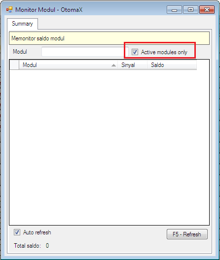

Active Modules Only
Monitor Modul merupakan satu dari sekian fitur yang mulai hadir di v3.3.8 berguna untuk memantau jumlah saldo di setiap modul supplier baik modul yang sedang aktif maupun tidak aktif, lokasinya ada di Alat Bantu -> Monitor Module.
Di v4.0.1 Monitor Module mendapatkan pembaharuan berupa fitur Active Modules Only dimana manakala diaktifkan, saldo yang akan ditampilkan hanya saldo dari modul - modul yang aktif saja, sementara yang tidak aktif tidak ditampilkan. Untuk mengaktifkan cukup centang checkboxnya, perhatikan gambar di bawah ini:

Nah... sekarang Anda dapat fokus memonitor saldo modul - modul yang aktif saja, tidak terganggu dengan saldo dari modul - modul supplier yang tidak aktif.